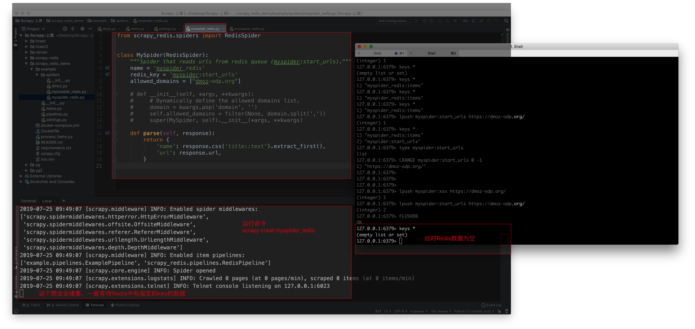
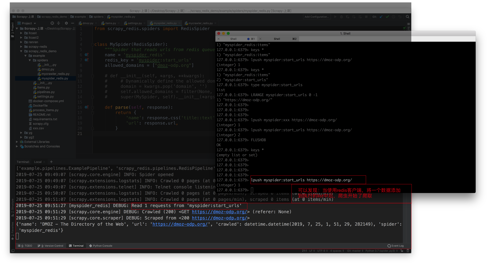
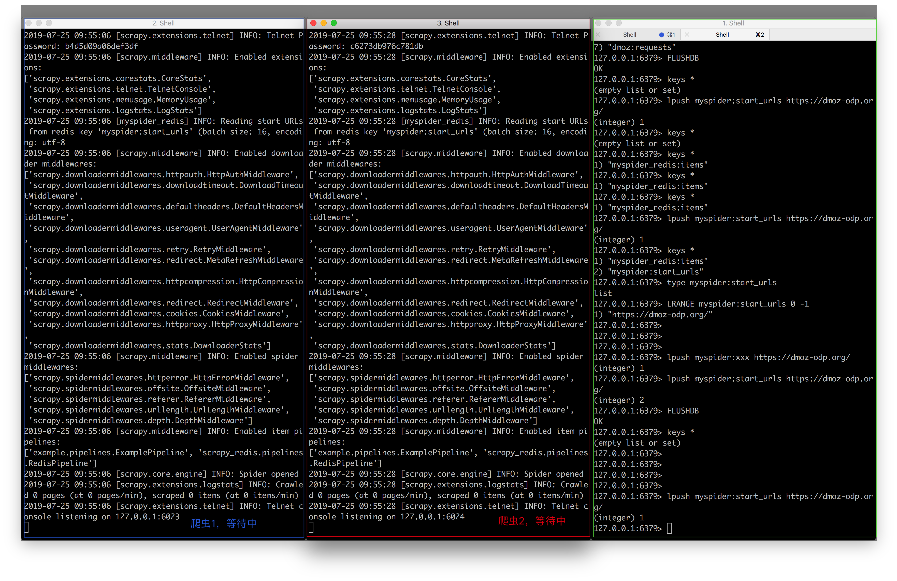
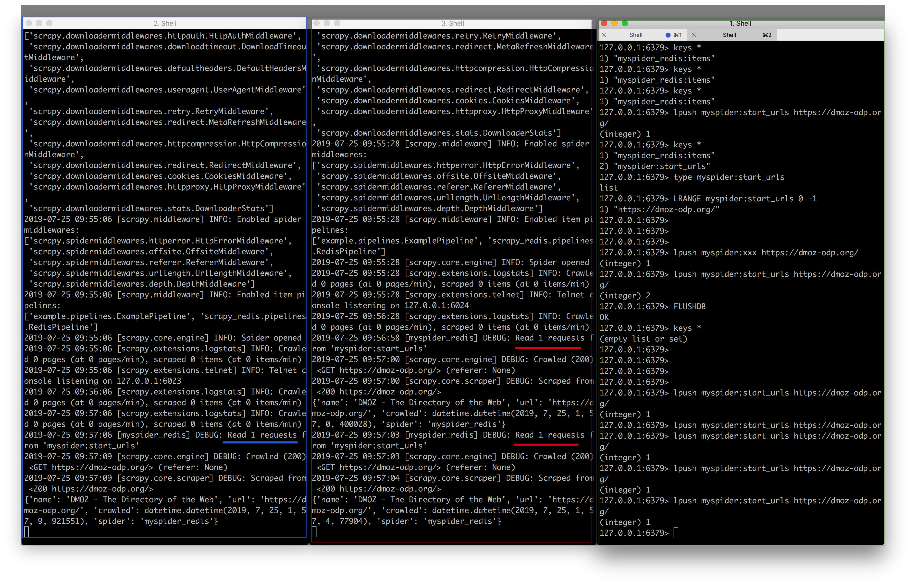

案例：myspider_redis
这个爬虫继承了RedisSpider， 它能够支持分布式的抓取，采用的是basic spider，需要写parse函数。
其次就是不再有start_urls了，取而代之的是redis_key，scrapy-redis将key从Redis里pop出来，成为请求的url地址。
from scrapy_redis.spiders import RedisSpider
class MySpider(RedisSpider):
"""Spider that reads urls from redis queue (myspider:start_urls)."""
name = 'myspider_redis'
redis_key = 'myspider:start_urls'
# 如果很确定要爬取的url域名，可以直接使用allowed_domains，而不适用__init__方法
allowed_domains = ["dmoz-odp.org"]
# def __init__(self, *args, **kwargs):
# # Dynamically define the allowed domains list.
# domain = kwargs.pop('domain', '')
# self.allowed_domains = filter(None, domain.split(','))
# super(MySpider, self).__init__(*args, **kwargs)
def parse(self, response):
return {
'name': response.css('title::text').extract_first(),
'url': response.url,
}
注意：
- scrapy-redis将从在构造方法
__init__()里动态定义爬虫爬取域范围，也可以选择直接写allowd_domains - 必须指定redis_key，即启动爬虫的命令，参考格式：
redis_key = 'myspider:start_urls' - 根据指定的格式，在某个电脑（Master端即可）上使用Redis命令
lpush例如lpush myspider:start_urls https://dmoz-odp.org/将要开始的start_url添加到Redis数据库里，RedisSpider 将在数据库里获取start_urls
执行方式：
- 执行爬虫，爬虫（们）将处于等待准备状态：
scrapy crawl myspider_redis
- 在Master端的redis-cli输入push指令，参考格式：
$redis > lpush myspider:start_urls http://dmoz-odp.org
- Slaver端爬虫获取到请求，开始爬取=
lrange mycrawler:start_url 0 -1
运行效果
Redis中无数据

Redis中有数据

运行效果（多台爬虫）

使用redis客户端多次向redis中插入数据，让2台爬虫开始竞争爬取，实现了分布式爬虫
